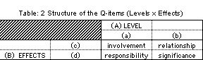
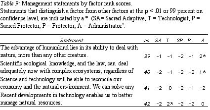
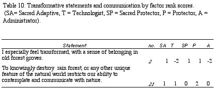
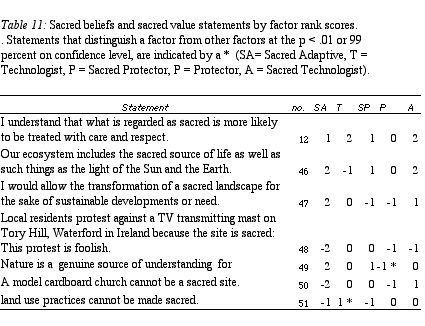
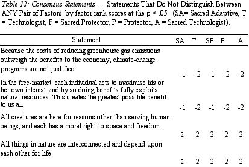

Table of Contents
- Summary
- Abstract
- Aim
- The Problem
- Definitions
- Farmers Interests and Land-Use Objectives
- Woodland Expansion
- Environmental Benefits
- Strategic Decisions, Protection and Adaptation
- Evaluating Farmer Preferences
- Biodiversity, Land-Use and Livelihoods
- Human Values for Nature
- Environmental crisis, sacred and sacred values
- Social progress, spiritual progress and differentiation
- Living Nature and Transformative Experience
- Sacred and heritage values in Britain
- Human Welfare
- Human Welfare, Economic Decisions, and Environmental Risks
- Environmental Values and Cost-Benefit Analysis
- Participatory Management and Sustainable Development
- Participatory Approaches to Environmental Management
- Method of Investigation
- Aim
- Problems and choice of method
- Q-Method Overview
- The Q-Sample Classification
- The Q-sample Structure
- Procedure
- Results
- Analysis and Discussion
- Demographic Variables
- Summary of the 5 Viewpoints
- Future Research and Applicability of the Findings
- On Farm Analysis
- Participatory Planning
- Research Opportunities
- Q Methodology and Local Viewpoints
- Review of Q and Recommendations
- The Five Viewpoints
- Discussion
- Conclusions
- References
- Articles
- Q Methodology
- Bibliography
Summary
The primary purpose of this investigation was to assess the potential of Q methodology as a tool for participatory planning in the adoption of agroforestry practices. Aesthetic landscape values in unprofitable Welsh upland sheep ranges are thought to be the main constraint to farmers' adoption of agroforestry techniques, and the diversification of farming practice, which offers potential benefits to livelihoods and environment. The range of commonly held viewpoints towards adaptation and protection of a sacred landscape in Upland Wales was investigated using Q methodology. Five viewpoints were discovered, two of the five permitting transformation, in principle, of a sacred landscape in face of need and progress. The study found that aesthetic preferences, when separated from a whole viewpoint, can be misconstrued and prevent adoption of agroforestry practices.
The promise of Q methodology as a tool for action research was found to be high because because it retains richness of information, whilst aiding analysis. It was concluded that the technique could be incorporated with data from on-farm analysis in participatory decision making.
Aim
To probe for adaptive and protective principles of established viewpoints concerning farmers' agroforestry adoption decisions in an upland open Welsh Landscape.
The Problem
Aesthetic landscape values, in a cultural preference for an open landscape in an unprofitable and overgrazed Welsh uplands are thought to be the main constraint in the uptake of planned expansion of woodland (Good et al., 1999), and options for adoption of diverse agroforestry techniques in an integration of woodland and farming.
Recommendations to farmers, towards the adoption of new methods, requires dialogue (Welsh Office, 1995), where few local examples of proposed diverse farm practices exist, and a change to agroforestry represents a sudden transformation of the landscape. Aesthetic landscape values might be considered to be pure appreciation of form (Brady, 1998), but if they are situated in the context of the viewers life (Berleant, 1994), such values are likely to be modified by considerations of livelihood needs, or notions of progress. In upland Wales divergent viewpoints may exist which remain masked by publicly held aesthetic preferences, rooted in cultural experience.
Aesthetic preference may therefore be elevated to an inviolable sacred status and become an obstacle to sustainable development, and the expression of human adaptability. The alternative is that aesthetic values exist alongside belief that the open sheep ranges could soon be sustainable. With these points in mind, the following question was asked: In the face of need and progress in upland Wales, what principle viewpoints exist towards protecting or transforming a sacred landscape?
Definitions
nature - is consistently defined throughout this thesis as other than human, for the purpose of discussing human-nature relationship.Nature encompassing human nature is not denied, however. All things- come from nature, and so nature- as a term in this thesis, includes products fashioned by humans.
'sacred nature values' - refers to (1) to cultural practices denoting a human-nature relationship, and (2) to personal numinous experience with nature. - The meaning is explored in the thesis, and defined as work progresses. Sacred, - I leave undefined until then.
'sacred nature beliefs' refers to (1) belief in nature's forms as sacred; (2) nature as an aspect of Being, rather than inert matter, and therefore, possible to relate to as a Being.
heritage - is defined as coming from the past, possibly incorporating cultural meanings. Heritage, situated in the present, is acknowledged to have affective associations.
culture - refers to social customs.
Woodland Expansion
A key aim in woodland expansion in Wales is to integrate woodland management with farm businesses (MAFF, 2000), so much of the proposed woodland expansion is effect agroforestry. Agroforestry offers several benefits to farmers through farm diversification practices, including environmental benefits (Erison, 1988). Production of hardwood timber and wood products for industry will increase flexibility, provide income and, aid employment. An enhanced landscape is good for for tourism and biodiversity. Woodlands on upland hill farms enhance animal welfare, by providing shelter for livestock, and giving reductions in yield variance due to monocultures, which includes livestock diseases (McAdam et al., 1997). These advantages can offset costs of reduced stocking rates. The cost of farm-produced wood chip is approximately the same as transporting straw, which commands significant purchase costs. Wood can also be put to good use around the farm. Wooded grassland landscapes are found visually attractive, and improve the image of agriculture in society. Because of the benefits to the land, grants for whole farm management may be attracted through the Tir Gofal (Land care) scheme, administered under the The Wales Rural Development Plan (MAFF, 2000). Trees offer scope for the reintroduction of hardy cattle like the Welsh Black, raised for butter and meat, are productive, able to over-winter outside and, good foragers, but they require some tree shelter. Open pastures provide little shade, and lack sufficient wind protection during the winter.
Environmental Benefits
Enhanced productive flows from silvopasture agroforestry (see Fig. 1) include biodiversity, plant density and water use efficiency (Sinclair, 2001). Presence of litter at the surface improves water infiltration, reduces evaporation and runoff. Tree root-soil infiltration improves infiltration of water into soil, which aids flow into underground storage systems. This reduces risk of floods in lower catchment area from run off (Manale, 2000).
There are positive effects on nutrient transport, in the alternation of positive (facilitative) interactions between plant species at one life cycle stage, and competitive displacement at another stage. Increased interspecific competition may enhance niche differentiation (Olff et al., 1999). Fencing off woodland favours natural regeneration, but has disastrous effects on bryophytes (Gritten, 1999). Mixtures of excluded and open woodland can be built into optimal grazing regimes. Creating buffer zones around existing woodland would considerably increase the area of interior or core habitat and connectivity between the presently fragmented native woodland (Gkaraveli, 2001), and woodlands may be linked. There is a significant need for mixed woodland which favours birds such as kite, pied flycatcher, pearl fritilliary butterflies. Continuous cover is necessary for marsh tits which are associated with 25 hectare blocks of hedgerow and thickets. Nuthatch require 50 hectare of complete arboreal land, preferably mature woods. Dormice require 100 hectares woodland, including rotational coppice. In a system of diverse practices, open farmland would favour species such as lapwing, chough, and marsh fritilliary (Andrews et al. 1994). Silvopasture grazing regimes can produce biodiversity benefits, where fencing off favours the natural regeneration of woodland, but has disastrous effects on bryophytes (Gritten, 1999). Free-ranging large grazers, such as cattle and horses, are increasingly reintroduced into agricultural grasslands (Frid et. al., 1995), to induce and enhance vegetative structural diversity, with mosaics of grasslands, shrub thickets and trees. A spatial association of unpalatable and palatable plants contributes to shifting mosaics at the landscape scale (Plieninger et al., 2001). Large grazers poach the ground which assists shifting plant mosaics and overall, they are better than sheep for invertebrates. Sheep bite close to the ground, which in low densities, can result in a combination of under- and over-grazing, to produce varied sward structure which is good for invertebrates (Andrews et al., 1994). Thus mixed regimes of cattle and sheep offer most potential.
Strategic Decisions, Protection and Adaptation
Farmers are required to make strategic decisions (see Fig 1), in response to changing markets and environment. There are clearly many advantages to diversification, which involve a transformation of the landscape. 'Sacred values' in upland Wales involve aesthetic and heritage values for open landscape which, in this case, is an association of integrated livelihoods and land-use practices and, qualities of the landscape. Sacred values may allow for adaptation, but they may also prevent change. Semi-natural woodlands were once the dominant land cover, persisting beyond mediaeval times, with their removal from the landscape an adaptation to external economic leverage, and not to ecology, or out of preference for open landscape. It is likely that adaptation features in farmers' strategic decisions. However, suddenly changing practices, wholesale, without necessary knowledge, or desired assurances may be daunting. Changes to economic incentives in the balance between livestock and woodland subsidies are sought (NAW, 1999), yet the main loss to uptake in possible planting areas was reported to be on landscape grounds and not on ecological or agri-economic grounds (Good et al., 1999). Uptake of diversification practices requires dialogue with farmers, landowners, and interested parties to foster a more favourable attitude to the potential of integrating farming and forestry (Welsh Office, 1995).
Evaluating Farmer Preferences
There are options for agroforestry, and technologies should address problems in such a way that farmers will actually consider implementing them within their overall production strategy (Avila, 1992). They have to fit the local context, and so evaluation of any technology must begin with understanding relevance, impacts and implications at the household/farm level. A positive on-farm economic analysis provides a necessary, but not sufficient, indication of the successful introduction of an agroforestry project.
The implications of the technologies themselves, such as technical assistance, products, inputs, planting schedules and labour are relevant but, so too are humanistic values and environmental impacts. Developing and testing models that predict farm household land-use decisions is essential, and priority areas for research include empirical analysis of agroforestry adoption decisions, which leads the list in identified knowledge gaps in agroforestry research (Mercer et al, 1998). The example of Welsh upland aesthetic preferences shows that, in a dialogue with farmers it would be useful to assess viewpoints that express the whole range of adaptive and, protective concerns, including aesthetic values.
A situated aesthetic has power to explain local preferences for an open landscape. According Kant, in his Critique of Judgement, aesthetic appreciation and attention to nature is 'a judgement of taste' and is free from any interest or desire. A judgement of taste is a 'free liking' which arises through the mere contemplation of an object. Brady (1998) reasons that this is a 'situated aesthetic', embedded in a person's own context, which includes values, beliefs, desires, life experience, feelings and associations.
By contrast formalist aesthetics are detached, an exclusive attention to form, associated with combinations of lines, colours, and shapes, where 'we need bring with us nothing from life' (Bell, 1931). If that this were to be to true within upland Wales, local people might not be particularly attached to their local vista, when faced with a need to adapt farming practices. In 1999 a group of 10 farms Pontbren in Powys, Wales, at an elevation of 300 m., decided to commence with diversification as a strategic economic decision and as an expression of land care (FC 2001).
From the example provided by Pontbren, there may be local viewpoints involving strategic decisions that lie alongside aesthetic values, in a whole human-environment relationship, involving the capacity to adapt just as our ancestors had. However, to move from shape ranging in an open landscape to agroforestry is a transformation of the landscape. To whittle away at clearing the woods is probably easier to start, and continue, than to be the first to plant a tree in the middle of the open landscape. Starting from scratch, farmers may also be cautious, because existing agroforestry systems may be improved with greater ease and success than new ones (Christopherson, 1992).
Biodiversity, Land-Use and Livelihoods
It is reasonable to desire that a mosaic of natural ecosystems coexisting with a wide variety of agro-ecosystem models is maintained in fragile mountain environments. Biosphere reserves, reserves for the world, incorporate Tolcha Bhotia (Joshi, 2001). Traditional uses of the land were prohibited and villagers were excluded from its management, from its inception as a reserve.
Poachers were able to enter the jungle and villagers, from their perspective of human and biodiversity, or nature interaction, came to see conservationists as enemies of nature. Lessons have been learnt, and principles of management that incorporate traditional stewardship roles of mountain communities, as opposed to distant control, are thought to be promising. Such thinking has international support, and is recognised in the UNESCO's 1992 Earth Summit's Agenda 21, chapter 13 "Managing Fragile Ecosystems: Sustainable Mountain Development".
The involvement of mountain peoples in Protected Area planning and management is imperative since they know how to live with mountains (Hamilton, 2001). Management of these complex systems includes concerns for increased production, yet any developments to build on the current systems must fit into the ecological and social contours, taking into account the Traditional Ecological Knowledge (TEK). Serious disruptions occur in middle intensity of monocropping management systems, where biodiversity decline is sharp (Swift et al., 1996).
Based on principles of reciprocity, a kind of give and take with an animated nature parallels the reciprocal relations within the social sphere. Acculturation, through development, tourism, migration and market expansion, will compromise indigenous peoples' ability to manage a fragile environment (Price, 1994). This is because TEK cannot be separated from cultural life and the associated pattern of livelihoods. Traditional cultures may be equally, or even more threatened than biological diversity (Byers, 1995), where mountain communities are very often among the world's poorest and most marginalised. It is because "Conflicts between ecology and economy, dependency and autonomy in mountain tourism remain unresolved" (Singh 1991), that initiatives to safeguard communities must not exacerbate the process of marginalisation.
Traditional economies tend to suffer from unfavourable terms of trade (Mountain Institute, 2002), an external pressure forcing communities to over-exploit their resource base for survival. Appropriate technological innovations in on-farm processing, and labour-reducing applications has potential to improve the welfare of highland communities. The implications for land use and livelihoods in traditional mountain cultures parallel, and contrast with those for upland Wales. One main difference is that in Wales land-use has to be adapted to external market changes which occur in the context of a centralised market structure, unless maintenance payments are made in some form. Another difference is the open landscape in Wales, to which adaptation may necessitate a transformation, which is adaptation on another scale, outside of local traditional knowledge. Possibly the most important lesson for conservation in Welsh uplands, though not new, is given by the notions of stewardship and symbiosis.
Humanising the landscape is a feature that lies behind sacred landscapes. They appear to involve a reciprocal relationship between man and nature with the element of a sacred ethos. This allows for environmental protection, adaptability, and a capacity for sustainable livelihoods. The integrity of culture is critical for their continued management. Cultural mythologies together with their management systems, that have led to the conservation of sacred landscapes cannot easily be incorporated into the Western cultural conservation ethos (Laird, 2001), and so it unlikely that complex traditions can be operationalised as a tool or model for transfer in conservation efforts. But the well-being, in terms of diversity, of anthropogenic agro-ecosystems still depends upon a creative cultural relationship, where custodians can earn a livelihood, and rural communities survive. Because sustainable development more specifically demands sustainable management of natural resources, a need for close interaction between planners and local communities is recognised. In order to achieve this, development strategies have to be based upon a value system that people can understand and appreciate, and therefore participate (Ramakrishnan, 2002).
Human Values for Nature
The worldwide significance of sacred values in natural resource management is recognised (Ramakrishnan, 1992), and there is reason to believe that in Britain people may have equivalent sacred values. Sacred values are categorised as moral values in environmental value philosophy (Edwards-Jones, 2000), where morals play a part in determining how we should act.
Environmental crisis, sacred and sacred values
Lynn White (1967) suggested a worsening environmental crisis until we reject the axiom that nature has no reason for existence save to serve man. According to White, the dominant strain of Western theism is the root cause in the exploitation of nature. He identified that dogma as representing God transcending a 'fallen' world, and humanity as exercising dominion over the world viewed as lacking intrinsic value. There are calls for a 're-sacralisation of nature' in the West. Posey (1999, pp. 103) urges we must 'discover how the balance sheet of economic and utilitarian policies', which characterise Western society's dealings with nature, can be countered by the 'sacred balance'. In general, what is held to be sacred is thought to be worthy of respect (Tucker, 2001).
Sacralisation of nature encounters questions of its compatibility with transcendental monotheism. Ancient and mediaeval Indo-european Celts and Germans practised nature mysticism. Cornelius Tacitus, in the 1st Century C.E. writes of the Ingaevones tribes of Germany, "they judge that gods cannot be confined within walls, nor portrayed in likeness to any human countenance; they consecrate groves and woodland glades, applying the names of deities to that hidden presence only sensed by the eye of reverence". Christianity, in the rise of the Roman Church was fiercely opposed to paganism, as a heresy: "The ruin of Paganism, in the age of Rufinius, is perhaps the only example of the total extirpation of any ancient and popular superstition", writes (Gibbon, 1995). An incongruity of monotheism and pantheism is not to be assumed, because Christianisation and Islamicisation of many countries has often resulted in a dual system of beliefs and practices (Mohs, 1994).
Exploitation of nature is not the only tendency amongst Christians, because nature, as God's creation, calls for respectful stewardship (Rupp, 2001).A retreat by traditional theism has led to a secular science where the 'sacred/spiritual' has become an other-worldly domain, rurally separate from nature and society. This in particular has allowed instrumental values to dominate, according to Apffel-Marglin (1998).
Living Nature and Transformative Experience
Transcendental religious dogma is not inevitably a view of a fallen world. In the Islamic Correct Hadith, we read the saying of the Mohammed: 'The earth has been created for me as a mosque and as a means of purification' (Haq, 2001). The word mosque literally means a place of prostration, and prostration involves touching the ground, thus the earth in its entirety manifests sacrality. Buddhism generally sees the natural world as conjoined on four levels: existentially, morally, cosmologically, and ontologically (Swearer, 2001). Similar in holistic view of life is Daoism, which professes the Unity of Mankind, Nature and and Heaven, and so nature becomes a source of inspiration Mutuality of the human heart and Heaven is mediated by cultivating a harmonious relationship with nature, and so humans fully realise their potential (Miller, 2001). In Jainism, a contemplative tradition, the supposedly inert world abounds with sensuousness (Chapple, 2001).
Cosmological interventionists view the environmental crisis as a problem of our metaphysical relationship to nature, a dysfunctional cosmology (Greenbaum, 1999). There is evidence that behaviour is more effectively motivated by identification than by beliefs and obligation, regarding beneficence toward humans (Monroe 1998), and is most likely true regarding beneficence toward or protection of the non-humans as well. How could a new world view supplant an old one if, as Geertz (1973) believes, world view and ethos are mutually reinforcing? The appeal of a cosmology must be in its appeal to genuine human experience with nature. Buber's insight (1996), is that human life is only fully realised when the 'self' establishes itself in a genuine 'I-thou' relationship with the 'other'. This relationship is nothing except a reciprocity of Being. The industrial revolution and the rise of modern technology which has brought about a change in humankind. Humanity itself is alienated from nature, and individuals are alienated from one another by relating in the 'I-It' mode. A genuine relationship with nature allows natures' intrinsic potentials to be seen, and prevents its interpretation as a standing-reserve or a mere means (Buber 1996).
Buber's views of a human-nature relationship ties up with universal models of sacred experience (Rappaport, 1999) and widely reported transformative values with nature (Palmer, 1998). Since pe-history, the sacred-making activity has been an anthropological constant, meaning 'to set apart' (Paden 91). Sacred activities involve visible and invisible boundaries, conventions of behaviour, and ritual (Parkin, 1991; Anttonen 1996). These activities may refer to natural forms, invisible agents, or human creations, such as the marks on a flag, or a football game (Bell, 1997). All sacred symbols are acquainted with a numinous component which denotes non-discursive, affective, ineffable, inconceivable, mysterious, awesome- qualities (Rappaport, 1999: 23). Numinous character exists in the immanent (or ordinary) things, the supernatural, and states of consciousness. Thus, according to Mircea Eliade (1968), sacred realities represent an appearance of Being, a real existence,- while profane or mundane realities are in an ultimate sense merely non-existent. In contrasting the sacred with the mundane,- religious theory of values holds that mundane experiences lack numinous sensation whereas, sacred does (Ross, 2000).
Amidst calls for re-sacralisation of nature, the impression that sacredness is missing from our understanding of nature in the West, may be false; Milton (1999) thinks it is a fundamental and well established part of it, where environmental discourses contain personal statements and analytical observations which link nature with spirituality and affective experience. Milton provides the example of the care taken by a conservationist where they walk carefully across grassland, out of respect for nature. In Europe, times are now comparable to procuration times, where unconventional forms of sacralisation are invented (Dobbelaere, 1993), and ritualised 'sacred moments' created within personal cosmologies (Anttonen, 1999).
In an analysis of environmental education in Britain, Palmer (1998) investigated whether spiritual ideas, attitudes and experiences held or encountered by individuals may strongly influence their awareness of and concern for the environment. Of the participants, 211 (91 per cent) cited experiences of being 'outdoors in the natural world' as formative influences. Many of these were described in spiritual or affective terms, using expressions such as 'awe and wonder', 'mystery', 'transcendence' and referring to experiences of solitude and freedom (Palmer, 1998: 150-1). Adams expresses the relationship: 'Nature is something that can be experienced, very directly, and this experience is the spark from which wider concerns about nature can grow - it is a vital root of conservation' (Adams 1996: 104). This being so, living nature could generally be experienced as spiritual and sacred, in the absence of religious dogma.
Sacred and heritage values in Britain
A grove of Thor can be traced from the Eleventh century at Thundersley in Essex (Herbert, 1994), but sacred groves exist mainly in name only. Forty six existing names relating to sacred groves are listed in Roman-Britain.ORG's web site (2002) This doesn't include the Cornish and Welsh names Lann- and Llan, a holy or sanctified place or community, which later became sites of Christian churches. Where I live on Anglesey in the village, Llangoed, means church in the woods. It could be that heritage values express sacred values, but to custodians of sacred places such as Maori people,their sacred places are more than heritage, possessing a living dimension, a metaphysical and physical whole, where the past is viewed as part of the living present (Matunga, 1994). It might be fairer to say, sacred values could include heritage values, but more specifically, sacred values involve a numinous relationship. In Britain we protect heritage structures, and to a certain extent, our land as heritage. Yet, in Britain, cultural practices concerning sacred land practices that serve to bind together the past, present, and future of living communities, are largely lost (Hubert, 1994).
Goodin (1992), in a green theory of value reasons that, though society and history give context to our lives, non-human nature is on an altogether different scale. It lies outside human history and culture, and therefore provides a context, not just for the lives of individuals, but for humanity (Milton, 1999). From Matunga's observations, heritage value is separated from the sacred nature values, but it is likely that heritage values are mixed with sacred value for a person who is connected to place. With this in mind, and noting that qualities in nature, such as colour in place or region, are attributed sacred value cross-culturally (LaPena, 1987), it is possible, then to see how aesthetic preferences in upland Wales could be situated alongside sacred and heritage values. It is harder to think of them as formal aesthetics values. As, according to observation, sacred values permit adoption of the environment (Shukadeb et al. 2001; Ramakrishnan, 1992) and can be differentiated from protective heritage values (cf.Matunga, 1994), viewpoints concerning the protection of a sacred landscape, in face of need or progress, may vary. In the living world there is always a new aesthetic, a new colour, and nature is alive and ever changing. There is also the need to be pragmatic.
Human Welfare, Economic Decisions, and Environmental Risks
Evidence exists that there are barriers to public participation in public planning (Norton, 2001). Public values may not be expressed or understood, and they may change.
Can a satisfactory aggregative form of valuation be devised which includes humanistic environmental values? Cost-benefit analysis (CBA) is a method frequently employed (Shrader-Frechette, 1998) in environmental planning, which depends upon the claim that neoclassical value theory can maximise welfare. A neoclassical revolution in value theories of economics at the end of the nineteenth century extended the definition of economic commodities as those things which embodied, for example, human labour or corn, to include anything which could form the focus of human desire (Rescher, 192.41). An Eighteenth century tool of social reform, utilitarianism is defined against a duty-oriented theory ("deontology,") developed by the Eighteenth eighteenth-century philosopher Immanuel Kant. Utilitarianism holds that the morally best action, in each given situation, lies in its consequences, which should bring about the greatest amount of pleasure or happiness to the greatest amount of people (Bentham, 1789). Economic analysis seeks to improve decisions regarding choice and uptake of technologies, and the efficient use of resources. Lacking direct personal knowledge of goals and preferences of the individuals, policy analysts use valuation techniques for non-marketable goods, or environmental changes, determined on a single scale. This is essentially a CBA enabling straightforward comparisons between alternative resource uses.
Environmental Values and Cost-Benefit Analysis
"A cynic is a man who knows know the price of everything and the value of nothing." ~ Oscar Wilde.
Preservationists are concerned that, if humankind has no instrumental use for nature, a risk will exist permitting the extinction of scientifically or aesthetically unremarkable, and commercially worthless species that do not seem to be vital to any ecosystem processes. According to anthropocentric philosophers rational humans confer value, and natural things lack intrinsic value. Imprudent and morally condemned practices may be restricted by means of appropriate legislation, education, and policy. However prohibitions and taboos associated with taking human life reveal an intrinsic value which separates it from virtually all other human value. Intrinsic value can be carried over into activities which knowingly cause the death of non-human organisms with goals or ends of their own and, by further extension, the elimination of species (Taylor, 1981). The value of "holistic entities" such as biotic communities and ecosystems which have no goals or ends of their own (Sylvan, 1973) remains unaccounted for, and conflicts exist between the welfare of domestic or feral animals and endangered plant species or overall ecosystem health; and also conflicts of interests between both domestic and feral animals, with wild animals.
Rolston III (1993) attempted a synthesis of individualism and holism by awarding a value dividend to species and to ecosystems upon which species depend. Many of the problems faced by CBA are monetary incommensurability. The effect of money as a common measuring rod is misleading or even harmful (Nussbaum, 1986) because for some things, the meaning of their value is corroded or destroyed. They simply are not convertible when difficult to recreate, replace or restore. Constitutive incommensurability is the idea that to put a price on things like life support functions of environmental services, is to be incapable of standing in the appropriate relationship to it (Raz, 1986).
Environmental Assessment (EA) has its foundations in practical problems of decision-making, in which economic valuation forms one component of the wider preference-based systems now commonly deployed in the EA. Contingent valuation (CV) is achieved by assessing 'willingness to pay' to avoid environmental hazards (Westra, 2000), where people's preferences are explicitly stated, rather than inferred. In a standard contingent valuation exercise a certain proportion of the sample will always reply 'everything' or 'nature is too valuable to be treated like this' or similar formulations (Sagoff, 1988). Such questionnaires are discarded because the analytic procedure doesn't recognise those answers, and neither can the underlying theory of contingent valuation. Otherwise, the possibility has to be acknowledged that the survey is aborted.
The assumption is only certain rational values are valid, and yet rationality falters in neoclassical theory, and may be totally misleading (Arrow, 1987). However, willingness to pay appears to be motivated by altruism in public contexts (Sen, 1977). This is especially the case with non-use values (Nyborg, 2000), and so contingent valuations fail to represent a viewpoint. For CBA, and probably for all preference-based value systems including CV, intrinsic value poses a problem of logical inconsistency exposed by asking, 'How much do I have to pay to kill someone?' (Prior, 1998). The answer is that the right to purchase an intentional act of murder is simply forbidden. In any case numbers of environmental vetoes, each similar in weight to the ultimatum 'Thou shalt not kill', is logically ridiculous. The trouble is, all environmental CBA evaluation, and probably all preference-based evaluation, is at odds with beliefs in the existence of objective and intrinsic values (Prior, 1998).
Since nature will always be useful for human welfare, the main problem with an instrumental approach does not lie with the contingency of nature's utility for humankind, but in cost-benefit value theory. Prudentially, an instrumental approach might achieve protection for nature as well as, or even better than other approaches, if guiding values permit. It is possible, even inevitable, that economic preferences along with other social preferences are incorporated in any practical decision making process (Keat, 1994).
However, claims of neoclassical valuation to be rational and general fall if breached by only one technical assumption, and environmental 'externalities' which cause conditions of market failure is a serious breach. Value theories do not provide ethical framework and economic valuation and its rules rely upon social market agreements (Edwards-Jones, 2000) not immutable laws of the market.
Participatory Management and Sustainable Development
Sustainable development
Sustainable development represents an approach that merges environment and economics, in a concern for the well-being of the ecological system and the human social system (Edwards-Jones, 2000 p.3-4; WCED, 1987). The concept of sustainable development has been a catalyst for new types of agricultural development programs (Thrupp, 1989), though it is still highly contested how to translate this principle of reform into practice (Edwards-Jones, 2000 p.4), but it is overly simplifying to say either, (1) that there is a conflict between economic and environmental goals which the sustainable development concept is trying to avoid, or (2) that the concept manages to effect a synergy between all dimensions (Rydin, 1999).
Lynne White's (1967) analysis of environmental problems concluded in parallel to Hardin (1968), a modern predicament of conflict between social freedoms and ecological constraints. Harding's solution appeals to humans self interest in the interests of survival and, demands coercion, White proposes transcending self interest where the principle problem is a loss of benign cultural relationship to the natural world which encourages voluntary restraint. There are advocates who endorse a new economics of sustainable development, but suppose that attitude changes toward nature will not come from individuals or communities: "Only science has the international status to induce human behavioural changes on a global scale" (Sagan et al., 1994). Their outlook is reminiscent of Comte (1823), who thought democracy was incompatible with social order, which could only be advanced by the "Priests of Humanity," scientists, engineers, and technocrats, in control of the new secular "Religion". Perhaps strong leadership is called for, but decisions involving values lie firmly in the public domain, whilst claims to ultimate knowledge and objectivity of orthodox science have been undermined (Kuhn, 1970). Science is not an autonomous activity standing outside history, and is a need for a reciprocal dialogue between science and citizen (Habermas, 1984).
Public involvement
Social ecology, for which Bookchin (1982) argues, views ecological problems emerging in failures in institutional and social relations. Rather than personal change, social change is considered necessary to bring about sustainable lifestyles, achieved primarily through participatory local democracy and decentralised economic systems. Effective communication is stressed. Pragmatists believe that one should tackle issues in a local context with the involvement of all the various interested parties (conservationists, planners, stakeholders, farmers, residents etc.). Public involvement is widely thought to be essential for a truly sustainable community, by government, non-governmental advisory bodies, and academics (DETR, 99; The Countryside Agency, 2000; Healey, 1997). A broad spectrum of views, visions and values is welcomed, which are to be heard and exert authority in decision-making. This is so, because participatory abstinence threatens the democratic process (Healey and Shaw, 1994), but there are systematic limitations. Protests against developments, after a planning decision has been taken, have encompassed deeply felt expressions of environmental violation (Wall, 1999). Genuine engagement of the public remains a profound challenge (Owens (94: 1142.4).
Participatory Approaches to Environmental Management
Participation in planning is associated with collaborative decision making, and the ability of people to move themselves toward a desirable future, in dignity, with an understanding of different viewpoints. A typical scenario would engage stakeholders in the generation of ideas, collective analysis, co-operative learning, and critical reflection--activities formerly believed to be the territory of experts and researchers (Roumlling et al., 1998). Participatory rural appraisal arose in response to problems of outsiders mis-communicating with local people in the context of development work (Chambers et al, 1989) and action research (Hall, 1977). The participatory approach presented itself as a solution to the challenge of operationalising the concept of sustainability, by focussing on the need to negotiate, through dialogue, how local meanings will shape projects (Chambers, 1997).
Chambers noted the power of participation to catalyse positive effects in rural areas outside the developing world, such as in Europe and North America. Small farm co-operatives and organised sustainable agriculture farming organisations have been an outcome (Allen et al., 2001; Grudens-Schuck, 2000). In industrialised countries, participation is appreciated as an organising framework for environmental management challenges, because otherwise programs largely mirror the values of science-based organisations and dominant voices in the community (Thrupp, 1989). Its' purpose in helping communities identify and adopt more sustainable natural resource management practices remains a fundamental (Pretty & Chambers, 1993).
The challenge of gaining insight into people's various viewpoints to reaching compromise, may seem daunting, but it is a participatory approach, and a process. The methods are distinct from a one-time aggregation of individual interests like simple cost-benefit calculations, which fail to capture the goals and motivations of local participants. The outcomes of participatory processes can enable practitioners to agree upon a coherent local reality on which to base a program. And at the level of the individual as well as the group, participation drives commitment, which is necessary to longevity of results as well as to short-term success (Cohen et al., 1980). Q-methodology was to be assessed for its potential to contribute to a participatory process.
Structured or semi-structured interviews depend upon content analysis. Van den Berg and Van der Veer (1989) assert, "Content analysis is not capable to analyse communications as discourses" (p. 161). Content analyses are limited because they succeed or fail depending upon the categories used. Simple rank ordering with no attempt to scale between the ranks presents problems of comparison, and ranking can only be performed with relatively few items.
All the conditions set out here are met in the methodology provided by Stephenson's (1932.4) 'Q-method'. No alternative exists at present, and in that sense the method is ground-breaking.
Aim
To probe for established viewpoints involving adaptive and protective values, concerning farmers' agroforestry adoption decisions in an open upland Welsh Landscape.
Problems and choice of method
A method is required to incorporate sacred/secular beliefs, transformative values and protective, adaptive responses to issues of environmental management. By establishing participants' values within their viewpoint, problems of incommensurability of values are avoided. The values under consideration lie in the field of human-nature relationship. To probe for values and beliefs associated with a person's viewpoint in the field of 'human-nature relationship', a methodology is needed that solves a certain problems. Failure to obtain information about beliefs and values within the whole topic places limits upon statistical analysis where several viewpoints exist. The method should be able to represent the views communicated by all people within the topic specified; It should put the individual at the centre of the point of view, and not be bound to any particular ideology. The method should reveal genuine schemata, which should not be artefacts of the instruments by which they were measured. It should use its mathematics, not to count but to chart the structure and shape of thinking (Barchak, 1984). The method should be hypothesis-generating. And finally, its' procedure and content should interesting to the judges.
Structured or semi-structured interviews depend upon content analysis. Van den Berg and Van der Veer (1989) assert, "Content analysis is not capable to analyse communications as discourses" (p. 161). Content analyses are limited because they succeed or fail depending upon the categories used. Simple rank ordering with no attempt to scale between the ranks presents problems of comparison, and ranking can only be performed with relatively few items.
All the conditions set out here are met in the methodology provided by Stephenson's (1935) 'Q-method'. No alternative exists at present, and in that sense the method is groundbreaking.
Q-Method Overview
Brief Introduction
Developed in the 1930s by William Stephenson (1935; 1953), Stephenson used factor analysis to correlate people with the viewpoints to reveal prevailing common viewpoints. There are always fewer viewpoints than persons (Stainton Rogers & Stainton Rogers, 1990). Fundamentally, Q methodology provides a foundation for the systematic study of human subjectivity.
The generalisability of a factors' structure in representing viewpoints is now well established. (Brown, 1980.p. 67; Thomas and Baas, 1993), shows that the same Q sample administered to different P sets in six USA states will produce essentially the same results. The robustness of factors across and within populations, regardless of alternative Q samples [1] from a concourse, has been convincingly demonstrated (Thomas & Bass, 1993).
Previous Studies
Q-methodology is used in diverse fields from decision-making in medicine, through to European Union policy studies. More recently it has emerged into the environmental field with studies on perspectives on forest use in America (Hooker-Clarke, 1989); Forest planning (Shands et al, 1990); Preferences for land use change in the Mackenzie/Waitaki Basin (Fairweather & Swaffield, 1996); State environmental knowledge and local political economy (Robbins, 2000); and, residents of the Upper Great Lakes USA, debating the ethics and meanings of living with wolves (Byrd, 2002).
The Instrument: Q Sorting
In Q methodology items are gathered, usually in the form of statements, but it can pictures, cards or music, and referred to as a 'Q sample'. The sample is taken from the flow of communication surrounding any topic, referred to as a "concourse" (Stephenson, 1978), and should be representative of that concourse. The term is traceable to Cicero. Literally, concourse means a 'gathering or collection' (Brown, 1993). In an operation referred to as "Q sorting", the participants are asked to rank each item from "strongly disagree" to "strongly agree", according to a scale which may range from five point to ten points.
Example: a five point rating scale (-2 to +2), looks like this: 2 -1 0 +1 +2 where strongly disagree is -2 is strongly agree is +2
A forced-choice format requires a specified number of statements to be placed in each slot. So, a finished sort for 'Harry' with 24 statements, employing the 5 point scale, may produce an array like this:
TABLE: 'Harry's viewpoint'
| 2 | 1 | 0 | 1 | 2 |
| 5 | 24 | 8 | 4 | 19 |
| 20 | 15 | 21 | 10 | 12 |
| 14 | 18 | 2 | 13 | 22 |
| 17 | 16 | 23 | ||
| 1 |
This example has a symmetrical format, and gives a mean of zero. This means that responses by different participants may be quantified and compared, because of a mean of zero, and rank orderings which are, unusually, scalar.
A person's point of view is given by the sorting process, because in sorting, each item is ranked in relation to every other statement (see 6.5. Procedure for details on how this achieved)
Sampling the Concourse
Primary considerations in the construction of the Q-sample are:
- To reflect the breadth and diversity of communication contained therein.
- Cost-relevance: A fixed budget will dictate that only the most relevant items be selected
- Coverage/redundancy: A final set of items which has maximum 'conceptual coverage' and minimum redundancy (in the sense of having multiple items address the same concept) is desired.
A factor in Q is a schematical design, where each Q sort should make sense and be homologous with what the person wants to say. Stephenson (1953) pointed out that the key to achieving this is in the diversity of the Q sample. If no statements reflecting factor C's viewpoint are in the Q sample, factor C will not appear no matter what size the factor ratio. Q differs from R-factorisation because it studies qualitative differences, on which quantity has no effect.
Analysis of Factors
Statistical analysis of variation in the ordering of the statements reveals factors representing a version of the world that is commonly held. These factors show how individuals with like views perceive an issue (Durning, 1996), and how individuals with different views see the issue, in a given prevailing situation. These factors are 'natural categories of thought' (Rosch, 1973; Stephenson, 1980).
The meaning of each statement will ultimately depend on what is imposed onto it by the Q sorters, to which factor analysis, and not variance analysis, is sensitive (Stephenson, 1953). Factor analysis examines a correlation matrix and determines how many different Q sorts emerge on the basis of resemblance.
Rarely more than 40 Q sorts are needed because the factors become highly stable by that time, if the participants were selected so as to reflect the finite diversity of available accounts (Stephenson, 1963; Stainton Rogers, 1995).
Discovered factors can be subsequently tested with demographic data, such as age, if desired.
Size of Q-Sample and Judge Comfort
It is important to keep in mind Q-sample size and the extent to which it may tax the mental capacities of participants (especially the elderly).
Length of Statements
Q factor interpretation does not rely on the interpretation of single statements in isolation from others, used as independent variables to test people. Instead the statements are being tested. Therefore, consensus meaning are irrelevant to Q. Both short and long statements can be vague, or convey different meanings to participants. With short statements it is less clear what exactly respondents do not agree with (if there is disagreement). In Q factor analysis, classification of long statements is not an obstacle. "Excess meaning" can be tolerated in the statements, so that people can interpret them in ways that are personally meaningful. In addition to the researcher's inference, holistic understanding of context and the participants' world-views is required. In other words, meaning is best understood if the participant(s) explain their sort(s).
FOOTNOTES
| [1] | "The sample is taken from the flow of communication surrounding any topic, referred to as a concourse" (Stephenson, 1978), and should be representative of that concourse. |
The Q-Sample Classification
Tools: The Q-sample
A sample of 56 statements was ultimately selected from a shortlist of 535 statements under the theme of Human-Nature Relationship and arranged in a structured design to form the Q sample.
Classification
Deriving the concourse to represent human relationship to nature was the first step. The concourse of statements was developed from relevant environmental and philosophical books and journals, and mass media sources.
Examination of the shortlist was conducted with two assistants in a hierarchal sort. They were asked to arrange the items into piles according to similarity, giving each item an arbitrary label, number 1 to 4 This exercise was repeated in two runs, and then the assistants were asked to name their discovered categories. Following discussion and examination of hierarchies, the assistants were asked to sort them into four categories: Involvement, Relationship, Responsibility and Significance. At this stage, the assistants had completed their task. The groups were examined for equivalent items; these were were culled to leave 56 statements, 14 statements in each category. The four categories employed were chosen in order to obtain a heterogeneous sample, representative of the whole concourse and were not to be tested as theory or used to test people. They were to be of no further interest, beyond assisting in post hoc tests for balance of the Q-set.
Further inspection of the Human-Nature Relationship statements gave 9 sub-topics: humanistic, intrinsic, goals, relationship, responsibility, management, origin, sacred, and, - signs.- Sub-topics did not have equal numbers of statements.
Specific statements of interest belonging to sub-topics humanistic, relationship, management, response, and sacred,- were to be the focus of the study, in answering research questions. Their presentation within the 'concourse' of Human-Nature Relationship ensured that the items of interest were judged in that whole context, and the valuations represented a person's- point of view according to that context
Sub Topics
The classification of statements has paralleled those common to environmental evaluation with humanistic and intrinsic categories. The rest suit the topic of Human-Nature relationship. An example of statements belonging to each sub-topic follows Table 1 which describes their orientation. .. image:: ../images/dissrt2.jpg
The Q-sample Structure
Structure
The sample of 56 items were arranged in a Fisher grid (Table 2), with a 2 x 2 design with two Levels(A) = (a) and (b); and two Effects (B)= (c) and (d). This design was chosen in order to balance to the Q sample, not in an attempt at factorial analysis of the results. The terms are hierarchies which give theoretical comprehensiveness and makes the starting point explicit.
Design of scale: shape and length
A five point scale was decided upon (Table 3). -2 represents 'strongly disagree', through to +2 for 'most agree'. A specified number of statements was required to be placed in each slot (i.e. the 'forced choice format').
The forced-choice format induces subjects to be more careful in their sorting than does a free format sorting approach since he/she has to make decisions on their placement. Also, it gives a common procedure for all the participants. Cottle & McKeown (1980) specifically tested the impact of the shape of the distribution by comparing numerous different shapes and factoring them; they all ended up with correlations in excess of + 0.9.
A rectangular distribution was chosen because it affords more discriminations at the extremes of agreement and disagreement. Studies report no substantial differences between the two rank distributions in production of factors; (Brown1, 1971; Cottle McKeown, 1980). Virtually all information is contained in the statement ordering and none in the surface features of the distribution. This stands to reason, as correlation effects a normalisation of all variables (Q sorts), hence nullifies differences in means and variances.
A 7 point scale can be too fine, for some topics, requiring unrealistic distinctions between statements to be made (Branden Johnson, Q-List communication).
Post Q-sort questions
Three post-Q sort questions (postQ 1-3) were put to judges after their sorts were completed. These tapped demographic information age, and region, and permitted free response.
postQ (1) "Which country and region do you belong to, or come from?
postQ (2) "What is your age"
postQ (3) "Please feel free to add your comments about the exercise"
Procedure
The P sample (participants)
Participants were of two groups, within Wales, and outside Wales. Countries outside Wales to which judges belonged were restricted to within the Western World, and included USA and Canada, Australia, and England.
In September 2002, participants were were approached in three ways; (1) Outside Wales by contact through the World Wide Web; (2) by direct approach in Llangoed and Llanberis, Wales.
A web survey was placed within the reach of search engines and publicised through 4 forums: Q-method, Archeological Forum, Ancient Philosophy, Classicists, and Environmental Ethics whose addresses were:
- Q-METHOD@LISTSERV.KENT.EDU
- http://www.stonepages.com/cgi-bin/ultimatebb.cgi
- SOPHIA@liverpool.ac.uk
- CLASSICISTS@liverpool.ac.uk
- ENVIROETHICS@listserv.tamu.edu
The welsh participants were born in Wales. The Web forums represented a diverse range of interests. It was hoped that with this varied approach, the participants would produce all relevant factors representative of the general population. It was not the aim of the study to determine the distribution of factors, but merely their existence. Loadings on factors were to be compared between Wales and outside Wales, and for age effects.
Administering the Q sorts
The participants are referred to as judges, and the set of judges is referred to as the P sample.
Judges were asked to reflect upon and rank a 56 item Q-sort. The sorting was done within a forced- response grid. The participants were either provided with a pack of cards, or a web-based programme containing the Q-set <a href="http://nrm.lilylakshmi.com/HNRwebq/intro2wq.htm" >which is available here to try</a>.
Written instructions for completing the sort were provided along with a sort scale. This required the participants to order the statements into five piles from "most agree" to "least agree", according to the sort scale provided, with neutral or unsure responses to items placed in the middle, zero slot. Each participant was instructed to begin the sorting process by dividing the statements into three piles: those statements experienced as agreeable in one pile, those disagreeable in a second pile, and the remainder in a third pile.
This was so as to enable the participant to be able to get an impression of the range of opinion at issue and to permit the mind to settle into the situation. This initial step also facilitates the sorting process. The more detailed discriminations then proceeded from this position, with judges free to reposition statements at any time. When the judges were happy with the final configuration, a record detailing each each statement's position was taken. Finally, each judge was asked three post-sort questions.
Results
Download or open the attached pdf for results.
Analysis and Discussion
Five factors were found.
Demographic Variables
Demographic Variable: Region
No significant effects of region upon factor loadings suggests that, - A comprehensive selection of participants in the P Sample and that, - Both zones, within Wales and outside Wales, reflect similar structures of thought in this concourse. If this were not so, then any one region would be expected to offer less factors in either case, (1) or (2).
Demographic Variable: Age
No effects of age upon factor loadings suggests that the types are not age dependent. The factors are therefore robust in that sense. Implications are that environmental education or experience of historic change have played little part in their formation. That being so, then the beliefs and values in this study would tend to form strong schema, where views and values are mutually reinforcing, confirming (Geertz, 1973).
Changes in environmental education may be potent and reach all ages, or individual background and formative experiences could be factors of equal strength.
Summary of the 5 Viewpoints
The interpretation of the factor 'types' is primarily based upon the array of factor statement scores, given in Appendix A.6. and standard errors for factor scores in Appendix A.7. The summaries here have been drawn from statements which follow below, with full analyses.
Those who believe in science and the law's ability to manage the environment, are labelled 'administrator'. Belief in modern technology's ability to enhance environmental management may be labelled 'technologist'. Those who offer protection to sacred landscapes from development may be referred to as 'protector'. Those types that permit development of sacred landscapes for human welfare may be referred to as 'adaptive'.
Sacred beliefs covered in this study are of two types; the sacred in nature's forms, and a sacred source of nature. Those types with a belief in sacrality of nature's forms are referred to as 'sacred'. From the statements of interest, the five types can be characterised as follows:
- F1 'Sacred Adaptive' (SA) = Sacred-nature beliefs and adaptive.
- F2 'Technologist' (T) = technology values.
- F3 'Sacred Protector' (SP) = Sacred-nature beliefs, protector.
- F4 'Protector' (P) = protector.
- F5 'Administrator' (A) = belief in Sacred-source of nature and technology beliefs.
Future Research and Applicability of the Findings
The implications of the divergent viewpoints for Welsh Uplands communities are:
An expressed aesthetic cultural preference for open landscapes is bound in a persons' whole viewpoint, where beliefs and values exist which permit transformation of a valued landscape for need or progress. This is true for two of the four viewpoints.
Local concerns for sustainable livelihoods may lie alongside aesthetic values.
Aesthetic preferences separated from a viewpoint, involving adaptive and protective values, can misconstrue their meaning, and in so doing, may prevent adoption of agroforestry practices. Stakeholders may still hope that sheep farming will become profitable again, and therefore think this is not the time to adapt farm practices.
An open landscape as an amenity for tourism may increasingly serve to maintain livelihoods. Tourism is not a land use practice, and will not maintain the land. In the future, headage payments may be removed, and sheep farming may not become profitable again, at present levels of stocking. If stock is to be reduced, it is also possible that policy incentives may emerge which serve to integrate woodland with farming. Farmers may have a sense of 'waiting for something to happen', in terms of policy. In an open landscape, effectively a farming monoculture, adaptation of farm practices represents a transformation. Aesthetic preferences to maintain the status quo may represent an uncertainty, not only for the future but also in how to adapt. Both these ideas need to be addressed in dialogue with farmers. Upland communities, without assistance in participatory action research, may have a slim chance of adapting, as a community, to a situation which requires conscious moves towards a transformation.
Although potential benefits are recognised, it is not a view of the author that open upland Wales should be transformed through farm land use practices, and that is a matter for stakeholders. There is a concern that aesthetic preferences are a reason to delay adaptive trials, or cover a need for assistance in participatory action research. Dialogue is needed, and presentation of the outcome of dialogue in the form of commonly held local viewpoints has potential to catalyse change, or strengthen resolve.
On Farm Analysis
In this study, only principles were of interest, but in actual consultation a Q sample might be expanded to include relevant local values, sampled from the population, and possibly some added, for a specified purpose. An analysis of viewpoints incorporating material from farm surveys and focus groups, landowners and tenants, would stimulate local discussions. A framework for farmer preferences could include the following:
- On-farm economic analysis
- Existing Traditional ecological Knowledge (TEK) and, flows (e.g. from AKT5)
- local biodiversity values
- local constraints to land use and livelihoods
- Local aspirations concerning land use.
Additionally constraints to adoption might include,
- Availability of technical assistance
- Implications of technologies upon the number and seasonality of workdays.
Subject to the chosen framework, knowledge elicitation strategies which are designed to access insider's knowledge without relying on assumptions and presumptions, known as the 'emic' approach (Werner, 1987), are considered useful because they capture the insider's knowledge. Relevant programmes are more likely to be achieved where planned with due regard to the farmers' perspectives (Rocheleau, 1987). Traditional approaches to dealing with complex agro-ecosystems systems, by abstraction as quantative simulation models have had limited impact on their development (Meutzelfeldt and Sinclair, 1993).
Explicit representation of farmers' knowledge has been developed (Tharpa et al, 1995) methods of representing farmer's preferences and goals has not. Values are incorporated into Knowledge based system, AKT5 (Sinclair and Walker, 1997), but not preferences which are needed for agroforestry adoption studies. These are normally elicited through ranking methods normally, which are limited. Seven or eight sets of land use choices appeared to be the limit for those farmers in Casey et al.'s farmers survey (1999). Systems diagrams can help farmer's make decsions, but eight attributes seemed to be too much information for farmers to evaluate at once, and this to was narrowed to five attributes (Casey. et al, 1999). How choices are to be limited, is not clear (Avila, M., 1992). Within an emic appraoch, aspirations, constraints and values may be elicited, and subsequently assessed in Q methodology, without severe limits upon number of choices. Assessment of local biodiversity values, used for assessing the local value of local habitats for conservation, also relies upon rank scores, but cannot be sued predictively due to the constraints of non-scalar scores, detached from a viewpoint which includes competing values. If biodiversity values were to be incorporated in the framework of one concourse, the predictive value would be enhanced. Methods of elicitation are well established (Gadjil et al., 2002).
In order to assess the impacts of research in multiple dimensions and communicate that information to decision-makers and stakeholders Trade-Off Analysis (TOA) links inputs and outputs from the various disciplinary simulation models on a site-specific basis (Yanggen et al., 2002). When attempting socio-economic appraisals, because the long-term benefits of resource conservation are minimised in discounting calculations,'Steady state' models, might be employed for changes to agroforestry as a resource-conserving interventions. This assumes a requirement to maintain the resource base regardless of discounting (Christopherson, 1992), and is a matter for policy makers.
Stephenson's (1953) chapter on "The Prior Analysis of Questionnaires" shows that the results of a Q study can be built into a questionnaire for purposes of nose-counting, by selection of particular statements. In that way, consultations can progress to aggregate summaries, to be employed for consensus decision-making.
Participatory Planning
The Participatory Rural Appraisal approach often has the dual aims of of action and research, a methodology which has the action to bring about change in some community or organisation Data on evaluation processes for assessing the products of participation have been thin (Warren, P. 2001), and action research provides a means by which participative consultancy is more rigourous. There are four basic themes: i) collaboration through participation; ii) acquisition of knowledge; iii) social change; and iv) empowerment of participants (Allen, 2001). It employs the assumption that effective social change depends on the commitment and understanding of those involved in the change process (Lewin, 1946 p.14).Lewin's concern with science and social reality, was that science was not helping in the resolution of critical social problems (Susman & Evered 1978). Surveys and other social research results are useful, but so is information on why different people see things as they do.
When using an action research approach, the results of the Q analysis are discussed by participants. When Q is melded with group work, the Q factors are contrasted, and the structure of their own thought is wavers more, or is more open (Grudens-Schuck, personal comm.)
Q methodology has the capacity to evaluate use and non-use values, without reduction to a single dimension, yet permit comprehension of the rich information. A philosophical shift from social facts as objective- facts to the idea of facts as subjectively and socially constructed- has come to be associated with the concept of qualitative- research. Thinking in action research seems to take the social construction of reality seriously. The emphasis seems to be on possibility rather than prediction. From this perspective of action research, it can contribute to people realising their values, and so envisaging a preferred future and organising effectively to achieve it. Hence, action research is a science of practice.
Research Opportunities
Diversification of Upland Wales land-use is currently a planning option. Reluctance to by outsiders to intervene is understandable, out of respect for local self-reliance. A dichotomy of, either dependence or, self-reliance, is unrealistic, and interdependence is more the way things are. Yet adaptive research should not determine an outcome.
In proposing action research a worry exists, where local communities reject change, because adaptive research is costs money. Such an intervention would have to be justified, and calls for assistance from within communities are perhaps a primary justification for such action. A preliminary survey to see if local people want help in decision-making could assist. Adaptive research for mainly academic purposes has been done, and limited trials in any case could be taken forward, employing values, goals and options from real farm studies.
It is notable that conservation staff are said to favour protection of open moorland and valley sides as habitat, mainly for birds. Some areas are SSSI and proposed SAC (good et al, 1999). If farmers were to express strong desires for diversification, a case for protection would need to be reviewed, against the benefits of change to biodiversity. In that case, farmers would also have a case for maintenance payments, in order to maintain the status quo. This would have to depend upon budget forecasts, which are a good idea in any case when assessing farmers' viewpoints on the issues of planning.
Q Methodology and Local Viewpoints
Because the interpretation is explicit and based upon actual statements in a context of a viewpoint, reduction to a priori assumptions have been avoided. With the structure of a topic, it has been able to test the hypothesis that sacred nature beliefs are associated with transformative environmental values and, thereby, contribute to an understanding of humanistic environmental values. It has also been able to test the hypothesis that divergent viewpoints exist toward sacred aesthetic values.
With method in balancing a Q sample, ideology has been avoided, and so representations of actual viewpoints obtained with no idea beforehand how many viewpoints would be revealed, or what their structure was. Both the differences and the Complementarity of viewpoints are revealing, and of relevance to planners, in understanding the values of stakeholders. They were compared as phenomena, and for that purpose only a few participants were required to define each viewpoint.
There is no guarantee that the factors discovered in the sample of respondents will be exhaustive for the future, and so they were contemporary expressions. The same factors cannot be assumed to appear in each and every locality, an empirical matter where relevance depends upon the representativeness of responders to a locality. Comparisons between Wales, and outside Wales, of a principled set of beliefs and values, do support the generalisability of their existence as principles across the larger population, and within the chosen localities in Wales. They do not represent responses to environmental issues concerning a particular location, field or mountain for example. For that purpose concourse samples from the locality, involving all relevant and specific issues would be necessary. The findings as generalities do serve to instruct some relevant dimensions in constructing such a concourse, in response to a specific public consultation exercise.
Review of Q and Recommendations
Q methodology's ability to represent viewpoints, is born out in the robustness of the factors found in this study, their meaning, and their fit within a framework. Confirmation of Hooker-Clarke's(2002) findings in Q research into roles in sustainable development, where changes had taken place in people since the preservationist administrative rationale came into being, with steward- perspectives in evidence.
The potential therefore of Q methodology to use local values and make sense of them, recommends itself for action research.
There are skills needed in the employment of Q methodology, which is a limit upon its use on the one hand, and a benefit in its rigourous method on the other hand. Considerable time was needed to interpret factors for presentation. Interpretation was made easier by reference to internally structured sub-topics, for which reflection and insight into the whole area is required. Some statements were not useful for interpretation according to the present aims, but provided the context for those statements, and so a point of view within human nature relationship, could be represented.
Examining the whole viewpoint would be fascinating, but would not answer the research questions. A purpose, and knowledge of relevant issues is required to sample a concourse. Interpreter bias could occur at that point. If the Q sample cannot represent a particular viewpoint, than it has failed. Procedure should follow caution, in obtaining all relevant viewpoints, and that is a skilled facilitator's task.
Homogeneity of statements is crucial in balancing of the sample, which is an aid in removing such interpreter bias. Therefore a pre-trial with a small number of participants of about five participants is to be recommended in order to complete post-hoc tests, and make adjustments. As an additional safeguard the concourse may be completed in a consortium. Employing Q methodology for consultation is best done under guidance because it involves skill. In this respect it recommends itself to action research because public participation in planning is important and should be of high quality. Action research aims to contribute both to the practical concerns of people in an immediate problematic situation and to the goals of social science in advancing knowledge, by joint collaboration within an ethical framework' (Rapoport, 1970:499; Whyte, 1989). The interpretations in Q and the method are transparent, because the whole Q sample provides the context.
The Five Viewpoints
Management Values
Table 9 displays management statements illustrating belief in science, law, and recent technology, as a solution to environmental problems. No type is certain that scientific technologies in environmental management can solve problems under current economic conditions. Administrators view scientific/legal administration as useful regardless of culture. They are alone in viewing human technical ability as a distinct advantage in living with nature. Three types (SA, SP, P) do not think that scientific/legal administration can manage environmental problems regardless of culture or economy; nor do they do believe modern technology an enhance management.
Technologists value modern technology in order to manage the environment, they do not believe scientific/legal administrations can solve ecological problems, irrespective of cultural conditions.
Transformative Experience
Statements of transformative experience and communication with nature are shown in Table 10. Administrators and Technologists, do not report transformative experience. Belief in sacred value of nature's forms corresponds with transformative experience and communication with nature, as reported by Sacred Adaptives and sacred Sacred Protectors. Protectors report the same.
Thus, transformative experience, corresponds to a close relationship with nature, (cf. Buber's 'I-Thou' relationship (1996), and sacred nature beliefs, but not sacred cosmological belief, in the case of Administrators and Protectors. The case of Protectors suggests that secular views, and views of a fallen world, may inhibit belief in sacred nature, whilst a fundamental relationship continues. In that case the truth value of sacred human-nature relationship is strengthened.
Whether transformative experience depends on opportunities for wilderness experience, and what kind of of opportunity, remains open to question, and could be followed up. How much it depends upon environmental education is another question. In fostering a benign cultural attitude towards the environment, these are important questions for the quality of environmental education.
Sacred Views
Table 11 displays statements relating to sacred beliefs and sacred land values. There is a acknowledgement of a general public respect towards sacred places, which is in agreement with the calls by a union of scientists 'An Appeal for Joint Commitment in Science and Religion' (1990). It is the sacred-minded as a whole, who show most flexibility toward transformation of a landscape, though generally supporting local sacred values. Sacred beliefs are of two types; sacred in nature's forms, and sacred source of nature. Sacred Adaptives and Sacred Protectors share believe in the sacrality of nature's forms, as well as as a sacred source of life. Administrators believe in a sacred source of life. The structures of sacred belief and values concerning protection and adaptation of sacred landscapes are illustrated in Fig 4 overleaf. Three points emerge:
- Protection for sacred landscapes is offered only with sacred beliefs, or values for human creative sacred practices. Technologists, who offer no protection to sacred sites, have no sacred beliefs themselves, and do not value sacred creative practices.
- Those who have sacred beliefs are flexible in questions of adapting land use for welfare, more so than Protectors who offer support for cultural heritage, as a sacred landscape to be preserved.
Sacred Adaptives, and Administrators would allow development of a sacred landscape in the name of sustainable developments or need, but support local aesthetic values. Sacred Protectors support sacred landscapes facing transformation, but may allow limited aesthetic change. The observation concerning flexibility accords with Matunga's (1994) reports of Maori people's values for sacred places being associated with a present living spiritual dimension, which differentiates it from cultural heritage. Sacred beliefs appear to engender values for the cultural, spiritual, and instrumental dimensions. This implies that sacred values are not simply non-use values, and are different from intrinsic or heritage values. Such flexibility equates with Low's (1996) cross-cultural study in which resource practices were found to be ecologically driven, and did not correlate with sacred prohibition.
- A consistent point of view is held by Sacred Mystics and Sacred Protectors in their seeing potential in sacred land practices. This is revealing in answer to the question concerning the potential of sacred values for conservation in the UK. Sacred land practices denote symbiotic relationships between habitats and culture (Ramakrishnan et al., 2002). These two types, Sacred Adaptives and Sacred Protectors, have sacred values which support such a relationship in three ways, which indicate a stewardship role in sustainable developments.
- Their sacred values appear to lie in a present living spiritual dimension, as noted in their protective attitudes.
- They demonstrate flexibility in instrumental land uses for human welfare.
- Sacred land practices also imply complementary environment and cultural practices (Shukadeb et al. 2001), with slow change, through adaptive management techniques , suggested by Ramakrishnan et al. (1989). The rejection of modern environmental technologies by the two types suggests that sacred land values embrace such practices. Sacred land practices may be suited to appropriate technologies, including traditional ecological knowledge, and management tools.
- Sacred Adaptives and Sacred Protectors, unlike Administrators, do not agree that an administrative rationale is adequate for management of the environment.
Consensus Statements
Consensus statements, which all types agree on, are shown in Table 12. The general view of the human welfare efficiency of a free market economic culture is notable. Moral rights are given to animals. All see a connected world in nature, a Giain view, and this view itself doesn't evoke sacred belief.
Discussion
Technology
Recent technologies in environmental management, towards which the participants expressed views, could include an assortment of powerful landscape-changing technologies, including bio-technologies, harvesting, and extraction machinery, as well as maintenance machinery. In conservation work in Britain, it is traditional technologies, such as spiling for riverbank maintenance, hand cutting in hedge maintenance, coppicing, and continuous cover forestry that are utilised, and promoted in NVQ and voluntary work. Recent technologies may, arguably, include appropriate technologies. A range of specific technologies could be put forward for evaluation in a local context.
Administrative rationale
The present administrative rationale is a conservationist approach which includes protection of 'rare' communities, such as ancient forest. In public administration, ecological assessments of species and land are required in designating land as valuable for nature reserves, each category of which is carefully selected from all of the land in the UK (Spellerberg, 1992). Species are selected for protection under the law, in the compilation of red data books of the International Union for Conservation of Natural Resources. In addition much effort is made toward protection of agricultural land, with with schemes to encourage enhanced landscape and conservation benefits (Edwards-Jones, 2000). The implication in all viewpoints, that administrative rationale is insufficient in facing the current environmental crisis, does not imply by that rare communities are not valued. It may imply that human values are thought to be important in land planning, education and matters of policy.
Values are inevitably attached to the ecological criterion employed (Usher, 1989) by scientists. Some criterion are used more often than others, for example richness of habitats may be used more than extent, fragility, threat or amenity value, landscape characteristics, or intrinsic human appeal. These viewpoints imply commitment,or belief in creative community engagements in environmental management. Investigation of specific values of this type are important for local action research.
Sacred beliefs
Sacred beliefs in the West, according to present findings appear to engender values for the cultural (protective), spiritual (transformative), and instrumental (adaptive) dimensions. The sacred values for nature demonstrate in general, a flexible approach, with an orientation towards a stewardship role. The flexibility shown with sacred values differentiates them from protective heritage values and formal aesthetic land values. Indications of a stewardship are relevant to conservation, not as a model for site conservation, but for their relevance in participatory planning. The five viewpoints described, mirror findings in a previous study by Hooker-Clarke (2002) who found, in addition to 'Traditional Conservationists', who accepted the conservative administrative rationale, perspectives of 'Traditional Stewardship'. This, plus a general robustness of the viewpoints found here across region and age strengthens the implication that, for planning, these viewpoints are considered in the planning agenda. A stewardship role is also shared in some respects by Protectors and Administrators, as shown in their views on technology and administration.
Conclusions
A potential danger was found to exist where the meaning of aesthetic or heritage preferences is misconstrued, when separated from a person's whole viewpoint, to become an obstacle to sustainable development. This study has attempted to illuminate principled viewpoints in protecting, or transforming, a sacred landscape in Upland Wales. Five divergent viewpoints were found to exist in Upland Wales which were consistent with viewpoints outside of Wales.
Cherished aesthetic values were situated within a person's whole view of human-environment relationship, of which two viewpoints permitted transformation of a sacred landscape in face of need and progress.
Community-based natural resource management, in a local context, requires tools which can assess all points of view on a topic, in order to remove barriers to participation. Commonly held points of view are actually limited in number, and Q methodology is able to reveal these, whilst retaining richness of information, without reduction to a single dimension.
Q method was proposed as a tool for agroforestry adoption studies. A next step in that direction would involve a test using a framework, incorporating economic analysis, TEK, livelihood and land-use constraints, biodiversity values and, aspirations of participants.
Q method was proposed as a tool for consulting the public, by collecting views and feeding them back to the public for discussion. Its special ability to make transparent environmental values and beliefs within commonly held viewpoints, without reduction to a priori assumptions, recommends itself for stakeholder discussion in action research when planning sustainable development.
Viewpoints embodying beliefs in the sacrality of nature were confirmed to exist, and contrast with secular viewpoints. Sacred nature beliefs were underpinned by transformative experiences with nature, rather than cosmological belief. This finding may have implications for the opportunities education provides. Sacred nature beliefs were, in particular, associated with a stewardship role and flexibility concerning adapting the environment. Four viewpoints out of five in all, amongst the public, demonstrated a stewardship orientation toward environmental management, which offers opportunities to planners in enhancing the environment.
This investigation concerning human environemental values confirms how sacred dimensions to environmental values are universal, and bear on a human relationship with the environment They are relevant to conservation and adaptation in community-based natural resource management.
Articles
Adams, W. M. (1996) Future Nature: A Vision for Conservation. London, Earthscan.
Allen, W., Bosch, O, Gibson, R., & Jopp, A., (2000) Benefits of collaborative learning for environmental management: Applying the Integrated Systems for Knowledge Management approach to support animal pest control. Environmental Management 27 (2) 215-223.
Andrews, J. & Rebane, M. (1994) Farming & Wildlife.RSPB, Bedfordshire.
Anttonen, V. (1999) The Sacred Critical Guide to the Study of Religion. (eds William Braun & Russell T. McCutcheon). London.
Apffel-Marglin, F. (1998) Secularism, Unicity and Diversity: The case of Haracandi's grove. Contributions to Indian Sociology - 32 (2) 217-235.
Arrow, K. (1987) Economic Theory and the Hypothesis of Rationality. In Eatwell, et al., (ed),The New Palgrave, London, Macmillan.
Avila M., (1992) Economics of Agroforestry Systems in Central America. In
Sullivan, G., et al., Financial and Economic Analyses of Agroforestry Systems. Nitrogen Fixing Tree Association, Hawaii.
Bell, Catherine (1997) Ritual. Perspectives and Dimensions. Oxford.
Bell, Clive (1931) Art. London: Chatto and Windus.
Bentham, J. (1970/1789) Introduction to the Principles of Morals and Legislation. Methuen, London.
Berleant, A. (1994) Beyond Disinterestedness British Journal of - Aesthetics - 34 (3) 242-254.
Bhat, Jayashree V.,, Krishna K.., Krushnamegh K.., Kunjeera, M., Laxman N.,, Nayak M., Ranjit D., Shankar J., Shridhar P., Shrikant G., Subramanian K., Suri V., Utkarsh, G., Yogesh G., (2000) Participatory Local Level Assessment of Life Support Systems A Methodology Manual. Technical report No.78.Centre for Ecological Sciences Indian Institute of Science, Bangalore.
Bookchin, M. (1982) The Ecology of Freedom: The Emergence and Dissolution of Hierarchy, Palo Alto California, Chesire Books.
Brady, E. (1998) Don't Eat the Daisies: Disinterestedness and the Situated Aesthetic Environmental Values 7 97-114
Brookfield, H. & Paddoch, C. (1994) Appreciating Biodiversity: A Conservation Paradox. In Bormann, F.H. & Kellert, S.R. (eds) Ecology, Economics, Ethics: The Broken Circle. pp. 26-39. Yale Univ. Press, New Haven.
Buber, M.(1996) I and Thou (Walter Kaufmann, trans.), New York, Touchstone.
Byers, E. (1995) Mountain Agenda: Environmentally Sustainable and Equitable Development Opportunities. The Mountain Institute, Franklin, USA.
Byrd, K. (2002). Mirrors and Metaphors: Contemporary Narratives of the Wolf in Minnesota. Ethics, Place, and Environment: 5 (1 )
Carmichael, D. et. al., (1994) Introduction. In Carmichael, D. et. al., (eds) to Sacred Sites, Sacred Places, London: Routledge.
Chambers, R.et al., (1989).Thrupp (eds.). Farmer First: Farmer Innovation and Agricultural Research. London: Intermediate Technology Publications.
Chandran, M. & Hughes, J. (1997) The sacred groves of South India: Ecology, traditional communities and religious change. Social Compass 44 (3) 413-427.
Chapple, C.(2001) The Living Cosmos of Jainism: A Traditional Science Grounded in Environmental Ethics. In Carmichael, D. et. al., (eds) (1994) Sacred Sites, Sacred Places, London: Routledge.
Christopherson, K.A. (1992) Highlights of Themes Discussed In Sullivan, G.M., et al., Financial and Economic Analyses of Agroforestry Systems.- Pia, H1: Nitrogen Fixing Tree Asociation, Hawaii
Cohen, J. M. & Uphoff, N.T. (1980) Participation's Place in Rural Development: Seeking Clarity Through Specificity, World Development 8 213-235.
Comte, A. (1823) Systéme de politique positive. Countryside Agency (2000) The State of the Countryside 2000: working for people and places in rural England. Wetherby: The Countryside Agency Publications.
Daniels, R. J. R., Malathi H., Joshi, N. V. & Madhav Gadgil, M. (1991) Assigning Conservation Value: A Case Study from India. Conservation Biology 5 (4) 464-475.
DETR (1999) The UK Strategy for Sustainable Development: a better quality of life. London: DETR..
DiZerega, G. (1996) A Critique of Ken Wilber's Account of Deep Ecology & Nature Religions. Trumpeter- 13 ( 2) <u>http://www.icaap.org </u> Access date: May 2002.
Dobbelaere, Karel, (1993) Church Involvement and Secularisation. Making Sense of the European Case. Secularisation, Rationalism and Sectarianism. Ed. by Eileen Barker, James A. Beckford, and Karel Dobbelaere. Oxford.
Edwards-Jones, G.et al., (2000) Ecological Economics Blackwell, Oxford.
Eliade, M. (1968) The Sacred and the Profane; Harcourt, Brace and World, New York.
Erison, S.P. (1988) Diversification of Upland Farms into Environmentally Sensitive Productive Woodlands. MSc thesis UCNW.
Fairweather, J. R.& Swaffield, S. (1996) Preferences for Scenarios of Land Use Change in the Mackenzie/Waitaki Basin. New Zealand Forestry- 41 (1) 17-26.
Fawcett, R., Nkowani, K., Smith, C.J.N., (1997) Multiple objective Socio-economic models of agroforestry systems. Agroforestry Forum 8 42-45
FC (2001) Forestry Commission: Woodlands Hold the Key, Farmers Tell Minister News Release - 3634
Feuerstein, G. (1987) Structures of Consciousness: The Genius of Jean Gebser - an Introduction and Critique Lower Lake, CA: Integral Publishing.
Frid, C. & Evans, P. (1995) In Managing Habitats for Nature Conservation, (ed) Sutherland.
Gadgil M., Achar K. P, Amba Shetty, Anirban Ganguly, Harini N., Harish R.
Gholz,H.L. pp 59-87. Martinus-Nijhoff, Dordrecht.
Geertz, C. (1973) The Interpretation of Cultures. N.Y. Basic Books.
Gibbon, E.(1995) Decline and Fall of the Roman Empire (XXVIII). In
Womersley, D. (ed) The History of the Decline and Fall of the Roman Empire. Penguin Classics.
Gleissman, S. (1990) Agroecology: Researching the Ecological Basis for Sustainable Agriculture. Ecological Studies. Springer-Verlag, New York. pp.380.
Good, J., Thomas, T., Clough, D., Humphrey, J. (1999) The Potential for Expansion of Upland Woodlands and the Environmental and Agri-economic Constraints: A Welsh Case Study. Scottish Forestry- 53 (1) 47-52 Goodin, R. E. (1992) Green Political Theory. Cambridge: Polity Press.
Gore, R., (1996) Neandertals: The dawn of humans. National Geographic. 128 (1) p. 29.
Greenbaum, A. (1999) Environmental Thought as Cosmological Intervention Environmental Values 8 485—497
Gritten, R.(1999) Woodland Grazing. Scottish Forestry - 53 (1)
Grudens-Schuck, N. et al., (2002) Renovating Dependency and Self-Reliance for Participatory Sustainable Development Journal of Agriculture and Human Values- Revised accepted (finally submitted June 5, 2002)
Habermas, J.(1984) The Theory of Communicative Action, vol 1: Reason and the Rationalisation of Society, Beacon Press.
Hall, B. L. (1977) Creating Knowledge: Breaking the Monopoly. Toronto, Canada: Participatory Research Group, International Council for Adult Education.
Hamilton, L. (2001) National Parks and Other Protected Areas in Mountains World Commission on Protected Areas, IUCN.International Journal of Wilderness. 7 (2)
Haq, S. (2001) Islam and Ecology: Toward Retrieval and Reconstruction. Religion and Ecology - Daedalus 130 (4) <u>www.daedalus.amacad.org </u> Access date: July 2002
Hardin, G. (1968) The Tragedy of the Commons. - Science 162 1243-1248
Healey, P. (1997) Collaborative Planning: shaping places in fragmented societies. Basingstoke: Macmillan.
Healey, P. & Shaw, T. (1994) Changing meanings of the “environment” in the British planning system, Transactions of the Institute of British Geographers,- N.S. 19 (4)
Hubert, J. (1994) Sacred beliefs and beliefs of sacredness Ch 1. In Carmichael, D. et. al., (eds) (1994) Sacred Sites, Sacred Places. London: Routledge.
James F., Casey, D., Mercer, E. & Snook, A. (1999) Evaluating Farmer Preferences for Agrofoestry Sytems: Survey Instrument design - by ICRAF <u>www.icraf.cgiar.org </u> Access date: June 2002.
Joshi, P. (2001) Culture, People and Nature in Context of Central Himalayas in India. International Centre for Integrated Mountain Development <u>http://www.mtnforum.org/resources/library/</u> Access date: June 2002.
Keat, R. (1994) Citizens, Consumers and the Environment, Environmental Values 3 333-49.
Kant, Immanuel. A Critique of Judgement: IN Crawford, D., Kant's Aesthetic Theory (1974) Madison, WI: U Wisconsin Press.
Kropotkin, P.A. (1972) Mutual Aid: A Factor in Evolution. New York: NYU Press.
Kuhn, T.S.(1970) The Structure of Scientific Revolutions. University of Chicago Press.
Laird, S. (2001) Trees, Forests and Sacred Groves The Overstory 93 <u>http://WWW.agroforester.com</u> Access date: July 2002. LaPena, F. (1987) The World is a Gift. San Francisco: Limestone Press.
Lewin, K. (1948) Resolving Social Conflicts: selected papers on group dynamics. New York, Harper.
Low, B. S. (1996) Behavioural ecology of conservation in traditional societies. Human Nature - an Interdisciplinary Biosocial Perspective 7 (4) 353-379.
MAFF (2000) Agriculture in the United Kingdom: Agriculture Accounts, Ministry of Agriculture, Fisheries and Food, London: The Stationary Office.
Manale, A. (2000) F*lood and Water Quality Management through Targeted, Temporary Restoration of Landscape Functions: Paying Upland Farmers to Control Runoff*. Journal of Soil and Water Conservation - 55 ( 3)
Matunga, H.(1994) Wahi tapu: Maori sacred sites. In Carmichael, D. et. al., (eds) Sacred Sites, Sacred Places. London, Routledge.
McAdam, J.& Hoppe, G. (1997) Sheep performance and production from a lowland silvopastoral system Agroforestry Forum.8 (3) 21-22
Mercer, D.E. (1992) Executive Summary in Central America. In Sullivan, G.M., et al., Financial and Economic Analyses of Agroforestry Systems.- Pia, H1: Nitrogen Fixing Tree Association, Hawaii
Meutzfeldt, R. I. and Sinclair, F.L. (1993) E*cological Modelling of Agroforestry Systems*. Agroforestry Abstracts- 6 (4) 207-247.
Miller, J.(2001) Envisioning the Daoist Body in the Economy of Cosmic Power. Religion and Ecology, Daedalus 130 (4).<u>www.daedalus.amacad.org </u> Access date: July 2002
Milton, K. (1999) Nature is already sacred. Environmental Values- 8 (4) 437-449.
Mohs, G. (1994) Sto lo sacred ground. In Carmichael, D. et. al., (eds), Sacred Sites, Sacred Places. London, Routledge.
NAW (1999) (National Assembly for Wales) Woodlands for Wales - Report of Consultation © Crown Copyright 2001
Norton, B.(2001) Environmental Values and Adaptive Management, Environmental Values 10 473—506
Nussbaum, M. (1986) The Fragility of Goodness. Cambridge, C.U.P.
Nyborg, K. (2000) Homo Economicus and HomoPoliticus: interpretation and aggregation of environmental values. Journal of- Economic Behaviour & Organisation- 42 305-322.
Olff, H., Vera, F., Bokdam, J., Bakker, E. S., Gleichman, J. M., Maeyer, K. de, Smit, R., Shifting mosaics in grazed woodlands driven by the alternation of plant facilitation and competition. Plant Biology, 1999, Vol.1, No.2, pp.127-137, 64 ref.
Owens, S. (1994) Land, Limits and Sustainability: a conceptual framework and some dilemmas for the planning system. Transactions of the Institute of British Geographers N.S.- 19 (4) 439—56.
Paden, W. E. (1991) Before 'The Sacred' Became Theological: Rereading the
Durkheimian Legacy. Method & Theory in the Study of Religion - 3 pp. 10-23.
Palmer, J. A. (1998) Spiritual ideas, Environmental Concerns and Educational Practice. Environmental Concern: London and New York: Routledge.
Parkin, D. (1991) Sacred Void. Spatial images of work and ritual among the Giriama of Kenya. Cambridge.
Pimental, D. & Pimental, M. (1979) Food, Energy and Society. Edward Arnold, London.
Plieninger, T. & Wilbrand, C. (2001) Land Use, Biodiversity Conservation, and Rural Development in the Dehesas of Cuatro Lugares, Spain. Agroforestry Systems - 51 (1) pp.23-34.
Posey, D. (1999) ed. and comp., Cultural and Spiritual Values of Biodiversity London: Intermediate Technology.
Pow, R. (1996) Managing Farm Woods-Costs and income. Q.J. forum. 90. 308-312
Pretty, J.N. & Chambers, R. (1993) Towards a learning paradigm: New professionalism and institutions for agriculture. Brighton, UK: IDS.
Price, N.(1994) Tourism and the Bighorn Medicine Wheel: how multiple use does not work for sacred land sites. In Carmichael, D. et al., (eds) - Sacred Sites, Sacred Places,- London, Routledge.
Prior, M. (1998) Economic valuation and environmental values. Environmental Values 7 (4) 423-441.
Ramakrishnan, P. (2002) Sacred Mountain Forests and Biodiversity. International Centre for Integrated Mountain Development. www.icimod.org.sg/mtn_resource Access date: June 2002.
Ramakrishnan, P. (1992) Shifting Agriculture and Sustainable Development: An Interdisciplinary Study from North-Eastern India. UNESCO-MAB.Parthenon Publ., Lancs. U.K. 424 pp
Rapoport, R. N. (1970) Three dilemmas in action research. Human Relations- 23 499-514.
Rappaport, Roy A. (1999) Ritual and Religion in the Making of Humanity. Cambridge.
Raz, J. (1986) The Morality of Freedom. Oxford, Clarendon.
Reiche, C. (1992) Economic Analyses of Living Fences in Central America. In
Sullivan, G.M., et al., Financial and Economic Analyses of Agroforestry Systems. Pia, H1: Nitrogen Fixing Tree Association, Hawaii.
Rescher, N. (1975) Introduction to Value Theory. London: Prentice Hall.
Robbins, P. (2000) The practical politics of knowing: State environmental knowledge and local political economy. Economic Geography 76 (2) 126-144.
Rocheleau, D.E. (1987) The user perspective and the agroforestry research and action agenda. In Agroforestry: Realities, POssibilities and Potentials, ed.
Röling, N. G. & M. A. E. Wagemakers (eds) (1998). Facilitating Sustainable Agriculture: Participatory Learning and Adaptive Management in Times of Environmental Uncertainty. C.U.P. Cambridge.
Rolston III, H.(1993) Challenges in Environmental Ethics, in Environmental Philosophy: From Animal Rights to Radical Ecology, edited by Michael E.
Zimmerman, Englewood Cliffs, New Jersey: Prentice Hall.
Ross, K.(2000) T*he New Friesian Theory of Religious Value* <u>http://www.friesian.com/newotto.htm</u> Access date: June 2002.
Rupp, G.(2001) Religion, Modern Secular Culture, and Ecology Religion and Ecology, Daedalus 1304 American Academy of Arts & Sciences, Cambridge, MA <u>www.daedalus.amacad.org </u>Access date: July 2002
Rydin, Y. (1999) Can We Talk Ourselves into Sustainability? The Role of Discourse in the Environmental Policy Process. Environmental Values 8 467—484
Sagan, D. & Margulis, L. (1994) Sustaining the Unsustainable: Toward a Slower Ecocide. In Chapple, C., (ed) Ecological Prospects: Scientific, Religious, and Aesthetic Perspectives.- New York: SUNY Press.
Sagoff, M. (1988)* The Economy of the Earth.* New York: Cambridge University Press.
Sen, A.K. (1977) Rational fools: a critique of the behavioural foundations of economic theory. Philosophy and Public Affairs- 6 317-344
Shrader-Frechette, K. (1998) First Things First: Balancing Scientific and Ethical Values in Environmental Science. Annals of the Association of American Geographers 88 (2) 287 (3 pages)
Shukadeb N., Senapati,B., Sahu, J., (2001) A Study of Three Hill Bhuiyan Tribal villages of Western Orissa. Integrating Mountain culture and Natural Resource Management, ICIMOD <u>http://www.mtnforum.org/resources/library/</u> Access date: July 2002.
Sinclair, F.L. (2001) Professional Update on Agroforestry Department for International Development. Natural Resources Advisors Conference.
Sinclair, F.L.and Walker, D.H. 1999. A utilitarian approach to the incorporation of local knowledge in agroforestry research and extension: In: Buck L.E., Lassoie, J.P., Fernandes, F.C.M. (Eds.), Agroforestry in Sustainable Agricultural Systems. Lewis Publishers, New York, pp. 245-275.
Singh, T.(1991)* Keep the Sharks out of the Mountains.* <u>http://www. ourplanet.com</u> Access date: June 2002.
Spellerberg, I.F. (1992) Evaluation and Assessment for Conservation, Chapman and Hall, London.
Susman, G., & Evered, R.(1978) An assessment of the scientific merit of action research. Administrative Science Quarterly,- 23 (4) 582-603.
Swearer, D.(2001) Principles and Poetry, Places and Stories: The Resources of Buddhist Ecology. Religion and Ecology, Daedalus, 130 (4) <u>www.daedalus.amacad.org </u>Access date: July 2002
Swift M., Vandermeer, J., Ramahrishnan, P.S., Anderson, J., Ong, C.K., Hawkins, B., (1996) Biodiversity and Agroecosystem Function. IN: Functional roles of biodiversity: a global perspective. Mooney, H., Cushman, J., Medina, E., Salas, O., Schulze, E., (Eds.), London, Wiley. p. 261-298.
Sylvan, R.(1973) Is There a Need for a New Environmental Ethic? Proceedings of the XV World Congress of Philosophy No. 1: Varna, Bulgaria 205-210. In
Zimmerman, M. (ed), (1998) Environmental Philosophy: From Animal Rights to Radical Ecology, 2nd ed. New Jersey: Prentice Hall.
Tacitus, Cornelius.(translated by H. Mattingly), The Agricola and the Germania, Penguin Books, Harmondsworth, 1970, p.109.
Taylor, P. (1981) The Ethics of Respect for Nature, Environmental Ethics - 3 197-218
Tharpa, B. Sincalair, F.L., & Walker, D.H (1995) Incorporation of Indigenous Knowledge and Perspective Sin Agroforestry Development. 2: Case study on the impact of explicit representation of farmers' knowledge. Agroforestry Systems 30 249-261.
Thrupp, L. A. (1989) Legitimizing local knowledge: From displacement to empowerment for Third World people. Agriculture and Human Values 6 (3) 13-23.
Tucker, M.& Grim, J.(2001) The Emerging Alliance of World Religions and Ecology Religion and Ecology, Daedalus, 130 (4) American Academy of Arts & Sciences, Cambridge, MA <u>www.daedalus.amacad.org </u> Access date: June 2002.
Ucko, P. (1994) Foreword, In Carmichael, D. et. al., (eds) Sacred Sites, Sacred Places, London: Routledge.
UNESCO (1996) Sacred Sites - Cultural Integrity, Biological Diversity. Programme proposal, November 1996, Paris.
Usher, M.B. (1986) Wildlife Conservation Evaluation. Chapman & Hall, London
Wall, D. (1999) Earth First! and the Anti-Roads Movement. London: Routledge.
Warren, P. (2001, April).* Survey-at-a-Distance on Assessment of Stakeholder Participation in FAO Field Programmes*. Rome: FAO, Sustainable Development Department, Available: <u>http://www.fao.org/sd/2001/PE0401a_en.htm. </u> Access date: June 2002.
Wong J., Ambrose-Oji, B., Lawrence, A., Lysinge, R., Healey, J, (2002) Development and promotion of improved methods for identification, assessment and evaluation of biodiversity for tropical mountain environments 2: Ranks, counts and scores as a means of quantifying local biodiversity values School of Agricultural and Forest Sciences, University of Wales Bangor Paper prepared for the ETFRN workshop on Participatory monitoring and evaluation of biodiversity: the art and the science. 7-25 January 2002. ERP project R7112 - European Tropical Forest Research Network. Available on the ETFTRN web site <u>http://www.etfrn.org/etfrn/workshop/biodiversity/index.html</u> Access date: May 2002.
Welsh Office (1995): The way Ahead for Welsh forestry. Report to the Minister of State for Wales by the Minister's Welsh Forestry Group. Welsh Office Cardiff.
Werner, O. & Schoepfle, G.M. (1987)* Systematic Fieldwork 1 Foundations of Ethnography and Interviewing*. Sage Publications.
Westra, L.(2000) The Disvalue of 'Contingent Valuation' and the Problem of the 'Expectation Gap'. Environmental Values 9 153—71
Whyte, W.F. (1989) Advancing scientific knowledge through participatory action research. Sociological Forum 4 (3)- 367-385.
White, L. (1967) The historical roots of our ecologic crisis. Science- 155 1203-1207.
Wilber, K. (1986) Up From Eden, Boston: Shambhala
Wilber, K. (1995) Sex, Ecology, Spirituality, Boston: Shambhala, p. 166.
World Commission on Environment and Development.(1987). Our Common Future. Oxford, UK: Oxford University Press.
Yanggen, D., Antle J., Stoorvogel J., Bowen W.,, Charles Crissman C., (2002) Tradeoff Analysis as a Tool for Assessment of Economic and Environmental Impacts of Agricultural Research: <u>www.cimmyt.org/Research/Economics/impacts.</u>Access date: April 2002.
Zar, Jerrold H. (1996) Biostatistical Analysis. 3rd ed. Upper Saddle River, NJ: Prentice-Hall.
Q Methodology
Arrindell and Van der Ende (1985) An Empirical Test of the Utility of the observations-to-Variables Ratio in Factor and Components Analysis. Applied Psychological Measurement- 9 165-178.
Barchak, L. (1984) Discovering Communication Paradigms With Q Methodology : Ferment or Sour Grapes? Operant Subjectivity- 7 (4) 115-130.
Brown, S. (1993) A Primer on Q Methodology Operant Subjectivity - 16 91-138.
Brown, S.R. & Melamed, L.E. (1990) Experimental Design and Analysis (Quantitative Applications in the Social Sciences series), 74 Newbury Park, CA: Sage.
Brown 1, S.R. (1971) The Forced-Free Distinction in Q-Technique. Journal of Educational measurement- 8 283-287.
Brown, S.R. (1971) Experimental Design and the Structuring of Theory. Experimental Study of Politics- 1 (1) 1-41.
Brown, S.R. (1980) Political Subjectivity: Applications of Q-Methodology in Political Science. New Haven: Yale University Press.
Brown, S.R.(Sep 2002) Reporting Results. Q Methodology Network <u>Q-method@listserv.kent.edu</u> Access date: June 2002.
Cottle, C.E. & McKeown, B. (1980) The Forced-Free Distinction in Q Technique: a Note on Unused Categories in the Q Sort Continuum. Operant Subjectivity 3 58-63.
Durning, D. (1999) The transition from traditional to post positivist policy analysis: A role for Q-methodology. Journal of Policy Analysis and Management 8 389-410.
Durning, D. (1996) The Transition from Traditional to Post-Positivist Policy Analysis: A Role for Q Methodology. Paper presented at the Eighteenth Annual Research Conference of the Association of Public Policy Analysis and Management. Pittsburgh, PA.
McKeown, B. & Thomas, D. (1988) Q Methodology. London: Sage Publications.
Rosch, E. (1973) Natural Categories Cognitive Psychology - 7 573-605
Sen, A.K. (1977) Rational Fools: a Critique of the Behavioural Foundations of Economic Theory. Philosophy and Public Affairs- 6 317-344
Shands, W.E., Sample, V.A. & LeMaster, D.C. (1990) National Forest Planning: Searching for a Common Vision 2. In Critique of Land Management Planning, USDA Forest Service. Washington, D.C.
Sohn, D. (1991) The Interaction Concept in Scientific Discourse and in the Analysis of Variance. Journal of Psychology- 125 621-629.
Stainton Rogers, R. (1995) Q methodology. In J.A. Smith, R. Harré, & L. Van Langenhove (Eds.), Rethinking methods in psychology - Thousand Oaks, CA, Sage.
Stainton Rogers, R. & Stainton Rogers, W.(1990) What the Brits got out of the Q: And why their work may not line up with the American way of getting into it! <u>http://www.cios.org </u> Access date: May 2002
Stephenson, W. (1953) The Study of Behaviour: Q-Technique and Its Methodology. Chicago: University of Chicago Press. (Chap. 9), The Prior Analysis of Questionnaires, pp.190-218.)
Stephenson, W. (1963) Independency and Operationism in Q-Sorting. Psychological Record 13 269-272.
Stephenson, W. (1967) The Play Theory of Mass Communication. Chicago: University of Chicago Press.
Stephenson, W. (1977) Factors As Operant Subjectivity. Operant Subjectivity 1 3-16.
Stephenson, W. (1978) Concourse Theory of Communication. Communication - 3 21-40. (Cf. Protoconcursus: The concourse theory of communication. Operant Subjectivity 1986 9 37-58, 73-96.)
Stephenson, W. (1980) Newton's Fifth Rule and Q Methodology: Application to Educational Psychology. American Psychologist - 35 882-889.
Stephenson, W. (1980) Consciring: a General Theory for Subjective Communicability. In D.Nimmo (Ed.), Communication yearbook 4 (pp. 7-36). New Brunswick, NJ: Transaction.
Stephenson, W. (1982) Q-methodology, interbehavioral psychology, and quantum theory.Psychological Record - 32 235-248.
Stephenson, W. (1987) William James, Niels Bohr, and complementarity: III - Schrodinger's cat. Psychological Record 37 523-544.
Stephenson, W. (1963) Public Images of Public Utilities. Journal of Advertising Research 3 (4) 34-39.
Stephenson, W. (1953) The Study of Behaviour: Q-technique and Its Methodology. Chicago: University of Chicago Press.
Strauss, A. & Corbin, J. (1990) Basics of Qualitative Research.
Thomas, D.B. & Baas, L.R. (1993) The issue of generalization in Q methodology: Reliable schematics revisited. Operant Subjectivity - 16 18-3
Thompson, B. (2000): Q-Technique Factor Analysis: One Variation on the Two-Mode Factor Analysis of Variables. In L. Grimm & P. Yarnold (Eds.), Reading and understanding more multivariate statistics (pp. 207-226). Washington, DC: American Psychological Association.
Van den Berg, H. and C.G. Van der Vee. (1989) Ideologies in the News: on the Measurement of Ideological Characteristics of News Reports. Gazette - 14 159-194.
Bibliography
Ackermann, R.J. (1985) Data, Instruments, and Theory. Princeton, NJ: Princeton University Press.
Altheide, D. L., & Johnson, J. M. (1994). Criteria for Assessing Interpretive Validity in Qualitative Research. In N. K. Denzin & Y. S. Lincoln (Eds), Handbook of Qualitative Research (pp. 485-599). Thousand Oaks, CA: Sage.
Andrews J. & Rebane, M. (1994) Farming & Wildlife RSPB, Bedfordshire.
Apthorpe, R. and Des Gasper (eds) (1996) Arguing Development Policy: frames and discourses. London: Cass.
Bartlett's F.C.Remembering. C.U.P. 1932
Boulding, K. (1989) Three Faces of Power, Newbury Park, California, Sage.
Carmichael, D., Hubert, J., Reeves, B. & Schanche, A.(1994) Sacred Sites, Sacred Places. London, Routledge.
Carney, D. (ed.) (1998) Sustainable Rural Livelihoods: what contribution can we make? (papers presented at the Department for International Development's Natural Resources Advisers' Conference, (July 1998) London: DFID
Case, D.D. 1990. The Community's Toolbox: The Idea, Methods and Tools for Participatory Assessment, Monitoring and Evaluation In Community Forestry. Bangkok: FAO.
Chapple, E. D. and C. S. Coon. 1942. Principles of Anthropology. Henry and Holt, New York.
Dennis, P., Bentley, C. & Jones, J.R.(1994) Impact of Grazing Systems on Insects and Spiders Livestock Farming Systems: research, develoment socio economics and land management. Third International Symposium Aberdeen, Scotland.
Edwards-Jones, G.et al., (2000) Ecological Economics Blackwell, Oxford.
Greene, D. & Cousins, S. (1996) Landscape Ecology and GIS Taylor & Francis.
Haverkort B., Van der Kamp, J. & Waters-Bayer, A. (eds). (1991) Joining farmers' experiments: Experiences in participatory technology development. Intermediate Technology Publications, London.
Holling, C. S. E. (1978) Adaptive Environmental Assessment and Management, Chichester, Wiley.
ICEP (2001) Institution of Civil Engineers Presidential Commission to review the technical approaches to flood risk management in England and Wales.
IIED (1991) Participatory methods for learning and analysis. RRA Notes 14. International Institute for Environment and Development, London. International Institute for Environment and Development 1996. Participation, Policy and Institutionalisation. PLA Notes No. 27. London: IIED
Key, C. (1994) Ecological Prospects: Scientific, Religious, and Aesthetic Perspectives. Ed. by Christopher Key Chapple. New York: SUNY Press, 236pp.
Keynes, J.M. (1921) A Treatise on Probability. London: Macmillan.
Kuhn, T. S. (1962) The Structure of Scientific Revolutions, Chicago, Chicago University Press.
Leopold, A. (1949) A Sand County Almanac and Sketches Here and There New York: Oxford University Press,
Lovegrove, R., Williams, G. & Williams, I. (1994) Birds in Wales. Poyser.
Lovelock, J. (1988) The Ages of Gaia.London: W.W. Norton & Co.
Marsden, D., Oakley, P. and Pratt, B. 1994. Measuring the Process: Guidelines for Evaluating Social Development. INTRAC NGO Management and Policy Series No.3. Oxford: INTRAC.
Nelson, N. & Wright, S. 1995. Power and Participatory Development: Theory and Practice. London: Intermediate Technology Publications.
Okali, C., Sumberg, J., & Farrington, J. 1994. Farmer Participatory Research: Rhetoric and reality. London: Intermediate Technology. 159 pp.
Peterken, G. (1993) Woodland Conservation and Management Chapman & Hall, London.
Rackham, O. (1986) The History of the Countryside Dent.
Ramakrishnan P., Purohit, A., Saxena, K., Rao, K., and RK Maikhuri R. (eds.) (1998) Conservation and Management of Biological Resources in Himalaya IBH Publishing, New Delhi : Oxford and London.
Rescher, N. (1975) Introduction to Value Theory. Prentice-Hall, London.
Robbins, L. (1935) An Essay on the Nature and Significance of Economic Science. Macmillan, London.
Slocum, R., et al., Power, Process and Participation: Tools for Change, Intermediate Technology Publications.
Stewart, D. W. and Shamdasani, P.M. (1990) Focus Groups: Theory and Practice. Applied Social Research Methods Series Volume 20, Newbury Park: Sage Publications
Striker, G. (1986) Antipater, or the Art of Living In. Schofield & Striker The Norms of Nature CUP London
Sullivan, G.M., et al., (1992) Financial and Economic Analyses of Agroforestry Systems. Pia, H1: Nitrogen Fixing Tree Association, Hawaii
Sutcliffe, S. & Bowman, M. (eds) (2000) Beyond The New Age: Exploring Alternative Spirituality. EUP: Edinburgh.
Sutherland W. (1995) Managing Habitats for Conservation CUP.
Veldhuizen, L.V., Waters-Bayer, A., Zeeuw, H.D. (1997) Developing Technology with Farmers: A Trainer's Guide for Participatory Learning. London and New York: Zed Books. 230 pp.
Walters, C.J.(1986) Adaptive management of renewable resources. Macmillan, New York.
Warren, D., Michael, L., Slikkerveer, J. & Brokensha, D. (1995) The cultural dimension of development: Indigenous knowledge systems. Intermediate Technology Publications, London.
Wilson, R. A., ed. (1997) Human Rights, Culture and Context. London: Pluto Press
Young, A. (1989) Agroforestry for Soil Conservation CAB.
Social progress, spiritual progress and differentiation
Social and spiritual evolution are equated by George Feuerstein, (1987) and Wilber embraces that theory (Wilber, 1995), in an argument against the authenticity of nature mysticism in its relationship with nature. According to Wilber, dissatisfaction with the promise and state of the modern world, while in some respects well founded, can lead to a powerful regressive temptation. The reasoning behind this is as follows: Personal states of awareness are mistaken for transpersonal states and, as such, nature mysticism is more spiritually limited than the secular rationalism against which its adherents rebel. The secular West is at a higher stage of spiritual development than earlier mythic societies, a shift which depended on the emergence of rational language. Beginning perhaps 200,000 year ago the boundaries between self and world were fluid. While this kind of consciousness may sound mystical, Wilber believes that they simply "can't tell the difference between the part and the whole to begin with." ( Wilber, 1986 p.41). They would be at the mental level Wilber ascribes to children two and four years old, lacking "Impulse delay and control, the ability to postpone, channel, sublimate, and offset otherwise instinctive body-bound activities and typhonic magic." ( Wilber, 1986 p. 88). Contrary to Wilber's views, foresight was perhaps more important for people in those times than for us moderns, cushioned as we are against misfortunes by welfare and health care systems (DiZirega, 1996).
Cro-Magnon people, who flourished during an ice age in Europe, Asia, and North America, prepared for winters in a world populated by sabertooth cats, cave bears, and lions. They produced paintings and finely worked and sophisticated tools, sewing hide clothing, making bone needles, fish hooks. The claim that Cro-Magnon were barely able to speak is probably untrue, because it is known that the delicate hyoid bone, from which the voice box hangs to make human speech possible, is indistinguishable between Neanderthals and modern humans (Gore, 1996). Social progress, rather than depending upon individual spiritual evolution, may be simply the extension of the breadth of human cooperation; spiritual evolution develops primarily through an increase in the depth of co-operation with others (DiZirega, 1996)